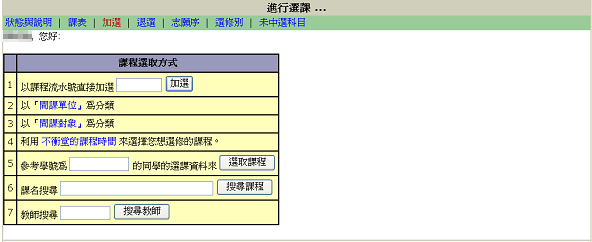

在加選的頁面裡,提供了7種方式協助你選課。
| 1 | 以課程流水號直接加選 | 輸入該課程流水號直接加選。 |
| 2 | 以「開課單位」為分類 | 課程會以學院、系所作分類。 |
| 3 | 以「開課對象」為分類 | 課程會針對各系所年級有更多的分類，通識教育中心的課程則會分通識選修的「人文與藝術領域」、「公民與社會領域」、「科學與 技術領域」和核心必修的「人文與思想」、「自然科學」、「應用科學」、「社會思潮與現象」。 |
| 4 | 利用不衝堂的課程時間來選擇你想選修的課程 | 直接在「課表」上空堂的時間選課。 |
| 5 | 參考學號為[...]的同學的選課資料來選取課程 | 可以輸入學號看該同學的選課資料。 |
| 6 | 課名搜尋 | 直接以課程名稱搜尋。 |
| 7 | 教師搜尋 | 以教師名字搜尋所開的課程。 |
